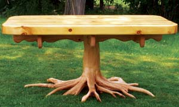

I make wooden furniture. Ninety percent of the wood is from trees and roots that I find in the woods that have been blown down or washed out by rushing water. Most people just cut them up and burn them, but not I. You can see some of the pieces I have crafted at my Web site.
If you have made furniture from drift wood or other “trash” wood, please post your photos at cu.MotherEarthNews.com. - Mother
|
 PHIL CHARTE The base of this table is hemlock and the top is northern yellow pine. |
|
|